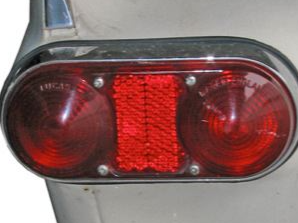
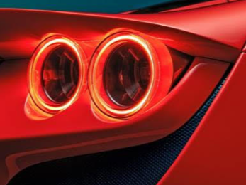
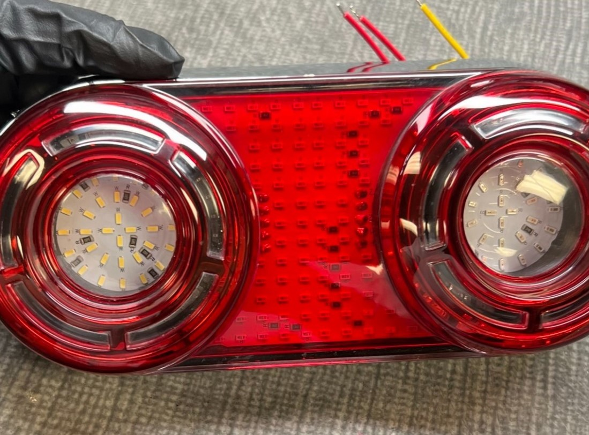
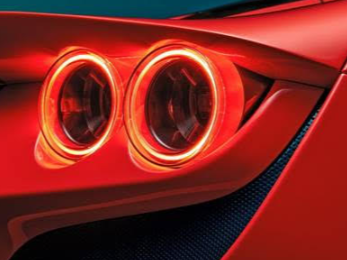
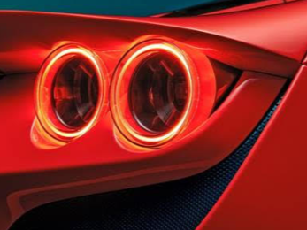

A mechanical engineer focused in continuous learning and improvement
About
Hi, my name is Eric Trang. I graduated from UNLV with a Bachelor of Science in Mechanical Engineering.
I have previous experience working in the MEP field of engineering before I decided to pursue product design. As a mechanical product designer I work on consumer end products in the aftermarket automotive field.
A drop-in replacement LED boards to replace the stock halogen bulbs of a 280ZX tail light to increase light output as well as added functionality of chasing LED sequence.
A 3D printed headlight bucket to add to the existing product line. This reduces the need for any extra modification of OEM components to ensure our main product line fits properly.
A custom project for a client's personal vehicle.
For a Volvo P1800.
Classic Car Parking Light
This original parking lamp was from a 1970 Pontiac Firebird that utilized a reflector style halogen bulb to
for it's primary light output. This project was to modernize this housing to achieve an OEM fitment and increase
light output. The housing was 3D scanned and the used as a reference to redesign the housing.
The new housing was designed to utilize the OEM connector and designed to have similar characteristics
of the original housing. This also included the use of an LED bulb as well as a halo LED to increase light output.
The final product was created with a CNC in 6061 Aluminum with either a chrome finish or a gloss black.
Drop-in Replacement Boards
The original tail light housing utilized halogen bulbs with a type of light diffraction lens to illuminate the different
signal outputs from the car. The objective was to modernize the outputs to create a unique effect to bring the tail light
housings to the 21st century.
The housing was first 3D scanned and modeled to generate a working model and to obtain dimensions for the printed circuit boards
and mounting solution. This project was a joint effort along with an electrical engineer to design and program the PCBs.
The 3D scanned model is used to create mounting solutions that utilize the OEM bulb housings. This results in a drop-in replacement
that would not require any additional modification to the OEM housing.
The video above showcases the sequential turn signal functionalities. It is in a display mode where it cycles through the 13 different
variations that are available to choose from.
3D Printed Headlight Bucket
Many classic cars utilize this style head light bucket to house the headlights. With OEM headlights, they are much simplier
with less components and much less depth requirements.
To utilize new LED based headlights, often times these buckets would have to be modified. As these belong to older generation
of cars, these parts are much harder to obtain OEM as they are not produced anymore.
A simple solution would be to recreate the part and have it 3D printed. The original headlight bucket was 3D scanned and remodeled
so that it could be 3D printed and use brass inserts to mount the new LED headlights.
This allows for an easy recreation of a much needed part that allowed for a 90% profit margin.
Volvo P1800 Tail Lights

This was a unique project where my company was brought onto during the final phase of a client's project where they where
doing a complete refresh of a Volvo P1800. Our company provided the headlights for this project as well as the design
and manufacturing for the tail lights.
The back housing was provided by the client and my role was to create a lighting assembly to fit inside the housing.

The inspiration behind this design was pulled from a modern Ferrari's tail lights, where the circular form is very prominent.
In order to tie in a turn signal light and reverse light, the outer ring of the circular shape was sectioned and fragmented
to form a chasing pattern as the function for the turn signal. The reverse light was formed from the center of one of circles
of the lens to be clear.
Since the housing was only 18 inches in length and 6 inches wide, it was difficult to build inside given the budget constraints.
To maintain a low cost for the project, 3D prints were used to mount the PCB to the housing as well as aide in the creation of the pattern
for the tail lights.

The lens was created with CNC'd with clear acrylic and finished with red paint. The PCB was created in collabration
with our electrical engineer to produce the desired pattern.
The final product installed on the clients vehicle at a show case event.


 

 Since the housing was only 18 inches in length and 6 inches wide, it was difficult to build inside given the budget constraints.
To maintain a low cost for the project, 3D prints were used to mount the PCB to the housing as well as aide in the creation of the pattern
for the tail lights.
Since the housing was only 18 inches in length and 6 inches wide, it was difficult to build inside given the budget constraints.
To maintain a low cost for the project, 3D prints were used to mount the PCB to the housing as well as aide in the creation of the pattern
for the tail lights.